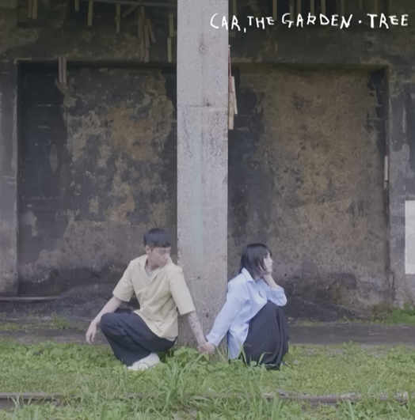

My Life Playlist
지친 하루 끝, 나를 위로하는 새벽의 선율
2002
Anne-Marie
어렸을 때의 추억이 떠오르는 노래입니다. 가사를 듣고 있으면 마음이 몽글몽글해지고, 지친 하루 끝에 기분 좋은 향수를 불러일으키는 곡이라 선정했습니다.
Youtube에서 듣기
주저하는 연인들을 위해
잔나비
새벽 감성에 가장 잘 어울리는 곡이라고 생각합니다. 잔잔한 멜로디와 시적인 가사가 마음을 차분하게 만들어주어, 생각이 많아지는 밤에 자주 듣습니다.
Youtube에서 듣기

나무
카더가든
언제나 그 자리에 있는 나무처럼 묵묵히 위로를 주는 곡입니다. 카더가든 특유의 목소리가 따뜻한 조명처럼 감싸주는 느낌이 들어 플레이리스트에 꼭 넣고 싶었습니다.
Youtube에서 듣기